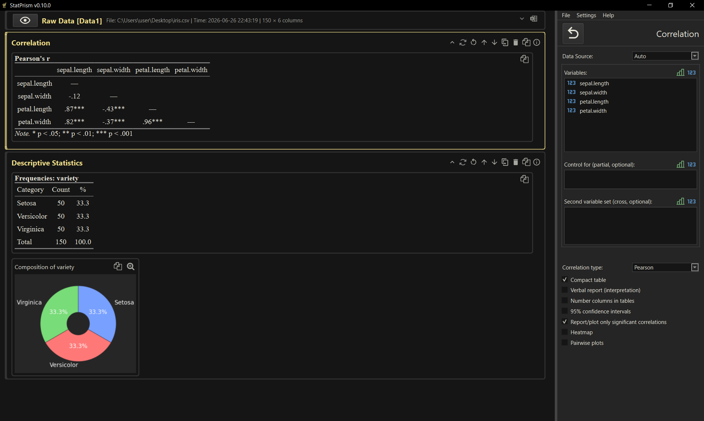
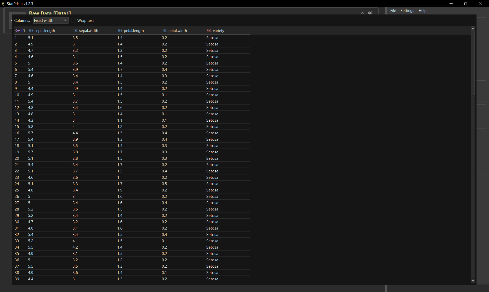
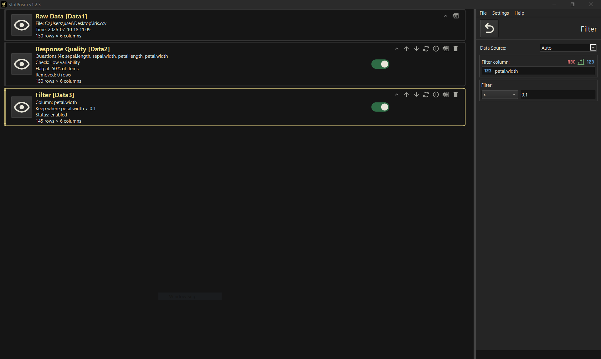
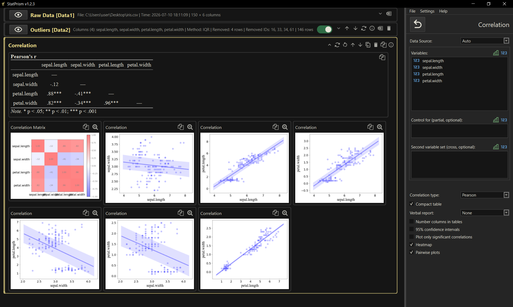

→ StatPrism
A desktop application for analysing survey and questionnaire data and turning it into publication-ready tables and figures — built for researchers and students in psychology and the social sciences who want correct statistics without writing code.

Statistics, start to finish
StatPrism runs the whole pipeline in one window — import, clean, analyse, and report — and produces publication-ready output: APA-formatted tables, customisable figures, and plain-language interpretations. Point-and-click throughout; nothing to program.
A finished analysis — tables and a figure, ready for a manuscript.

1 · Import your responses
Open a response export — a Google Forms spreadsheet, Excel, or CSV. StatPrism reads it directly, detects each variable's type (numeric, ordinal, nominal), and keeps your value labels intact, so you can start working straight away.
Importing a questionnaire export.

2 · Clean and reshape
Prepare the data with point-and-click steps — no syntax. Remove duplicate or straightlined responses, flag multivariate outliers, reverse-score items and build scale scores, one-hot encode categories, and filter or recode as needed. Every step is a card you can revisit and re-run.
Point-and-click data-processing steps.

3 · Analyse and report
Run the analysis you need — from descriptives, t-tests, ANOVA and correlations to regression (with moderation and mediation), reliability (Cronbach's α and McDonald's ω), exploratory and confirmatory factor analysis, and structural equation modelling. Results come as APA-formatted tables, fully customisable figures — including factor-structure and mediation path diagrams — and an optional plain-language report, all ready to copy straight into Word.
A fitted analysis with its APA table and figure.
StatPrism Team:
A. K. Balashevych — Model Specification
N. V. Petrova — Testing & QA
I. I. Yakovkin — Software Development & PM
If used in research, please cite StatPrism as:
Balashevych A. K., Petrova N. V., Yakovkin I. I. (2023). StatPrism [Computer software]. Retrieved from https://github.com/yakovkinii/stat_prism
Copyright (C) 2023 — 2026, StatPrism Team. StatPrism is free software, licensed under the GNU General Public License v3.0 or later. It is distributed in the hope that it will be useful, but WITHOUT ANY WARRANTY; without even the implied warranty of MERCHANTABILITY or FITNESS FOR A PARTICULAR PURPOSE. See the GNU General Public License for more details.